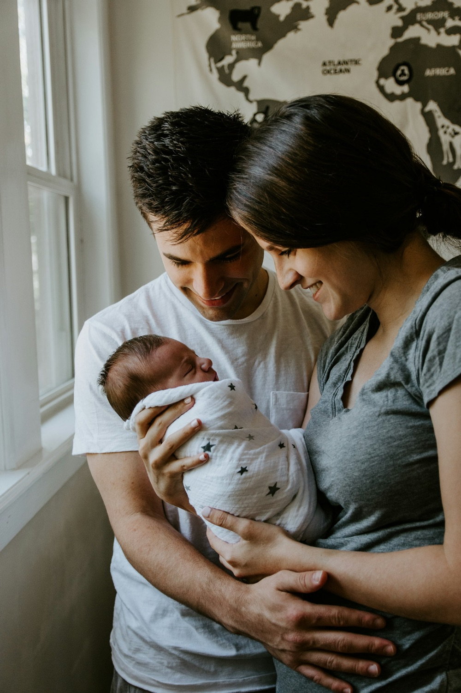

Developmental science · Ages 0–5
Your child's behavior makes sense. Here's why.
Short, self-paced video classes built from peer-reviewed developmental science, so you can understand what your child is actually doing and respond with confidence instead of guessing.
Built by Matthew McArthur, Child Development Specialist, with graduate training in developmental psychology and 100+ families coached in Los Angeles.

“The research on early childhood is clear and consistent, yet almost entirely absent from mainstream parenting content. Every class here exists to close that gap.”
Matthew McArthur · Founder, Growing Minds Science
- Every lesson is grounded in 50+ years of peer-reviewed research, not trends or opinion.
- Shaped by direct coaching with 100+ families in Los Angeles.
- Educational, never shaming, and never a substitute for medical advice.
The first five years
Five years, five seasons of growth.
Each stage has its own logic. Choose one to see what's growing right now, and what actually helps.
Birth to one: the foundations year
What's growing now
Researchers estimate the infant brain forms about a million new neural connections every second. Attachment, sensory maps, and the rhythm of back-and-forth interaction are the main work of this year.
What helps
Serve and return: when your baby babbles or looks at something, respond. That ordinary loop, not flashcards, is what builds the architecture.
One to two: first words, first steps
What's growing now
Walking opens the world, and language understanding races far ahead of speech. Joint attention, the act of looking at something together, is how words get attached to things.
What helps
Narrate the ordinary. Name what your child is already looking at. Conversation, not instruction, is how vocabulary grows at this age.
Two to three: autonomy and big feelings
What's growing now
“No” is a developmental milestone, not defiance. Toddlers are practicing self-determination while the prefrontal cortex is still profoundly immature, so big feelings outrun the brakes.
What helps
Real choices where you can, calm limits where you must. Your steadiness during a meltdown is the scaffold their regulation is built on.
Three to four: the imagination years
What's growing now
Pretend play takes off, and it's serious cognitive work: holding two realities at once, taking perspectives, rehearsing social roles. Early self-regulation begins here.
What helps
Protect unstructured play. Join the pretend world on your child's terms sometimes, because following their lead is what makes it developmentally rich.
Four to five: self-control, slowly
What's growing now
Executive function (working memory, flexible thinking, impulse control) is under construction, and it develops on a wide, normal range. Readiness is a window, not a race.
What helps
Games with rules, real responsibilities, and routines they can predict. Practice, not pressure, is how self-control grows.
The flagship class
The toddler years, explained.
A self-paced class for parents of 1–3 year olds. Five short modules turn the research into a clearer mental model of what your toddler is doing, and why. No scripts, no shame, no graduate seminar.
-
The toddler brain, briefly
Why toddlers need far more support than their behavior seems to suggest.
-
Language: the everyday version
How language grows through ordinary conversation, not lesson plans.
-
Autonomy and “no”
Why “no” is healthy, and how to hold limits without power struggles.
-
Big feelings, meltdowns, and repair
What's actually happening, why your calm is their scaffold, and how to reconnect afterward.
-
Transitions and routines
Why predictability matters and how to make daily shifts less explosive.
Growing Minds AI · Free · Answers show their sources
Ask a parenting question. Get an answer from a curated science library.
Growing Minds AI now answers from a curated knowledge base, built from peer-reviewed developmental research, the milestone data behind our tracker, and our own class curriculum, instead of generic internet knowledge. Every answer shows where it's grounded, in plain language. Free to try, no account needed. Educational only; never medical advice.
What's here
Four ways to understand your child better.
-
Classes
Self-paced courses built around developmental windows: language, autonomy, big feelings, and what your child needs at each stage.
-
Free tools
Practical references for everyday moments: meltdowns, sleep, limits, repair, and the milestone tracker. Free, no account needed.
-
Articles
Research explained without buzzwords or parenting shame: serve-and-return, screen time, self-regulation, and what to do with it.
-
Growing Minds AI
Ask a parenting question and get an answer drawn from a curated developmental-science library, with its sources shown. A private AI tutor, free to try.
The founding circle
The first group is small, on purpose.
The toddler class opens to a founding group first, so early feedback can shape it. Join the waitlist for founding-member pricing and the free milestone tracker.
- Founding-member price of $49, with Growing Minds AI included free
- The free milestone tracker for the first three years, no account required
- First access the moment the class launches